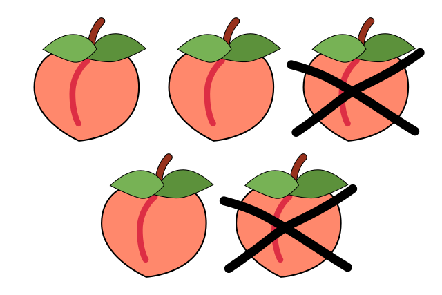

Subtraction
Subtraction is an arithmetic operation that represents the operation of removing objects from a collection. Subtraction is signified by the minus sign, −. While primarily associated with natural numbers in arithmetic, subtraction can also represent removing or decreasing physical and abstract quantities using different kinds of objects including negative numbers, fractions, irrational numbers, vectors, decimals, functions, and matrices. Subtraction follows several important patterns. It is anticommutative, meaning that changing the order changes the sign of the answer. It is also not associative, meaning that when one subtracts more than two numbers, the order in which subtraction is performed matters. Because 0 is the additive identity, subtraction of it does not change a number. Subtraction also obeys predictable rules concerning related operations, such as addition and multiplication. All of these rules can be proven, starting with the subtraction of integers and generalizing up through the real numbers and beyond. General binary operations that follow these patterns are studied in abstract algebra. Source
